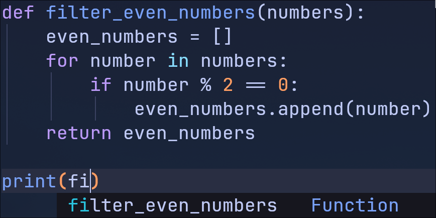
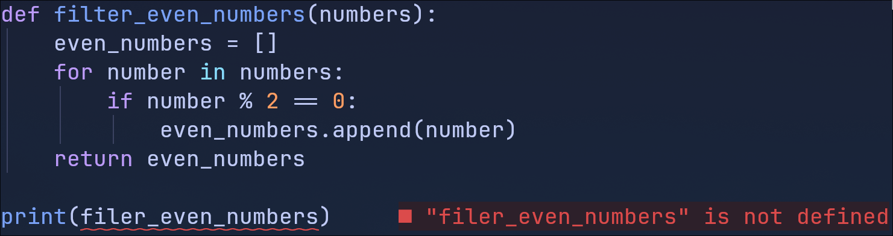
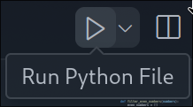
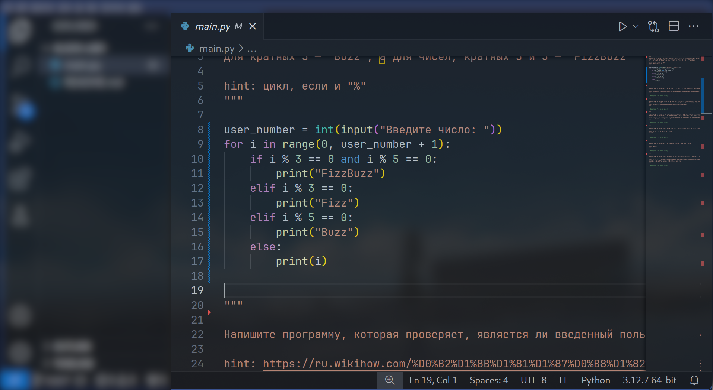
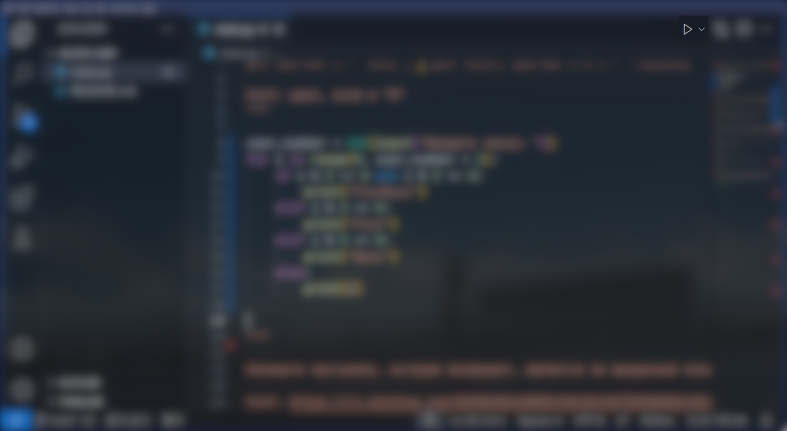
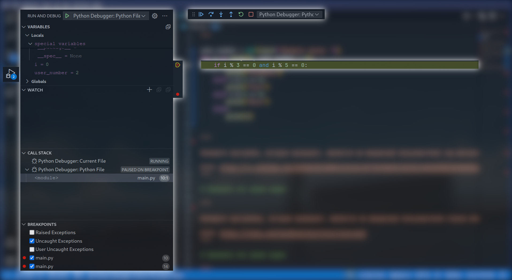
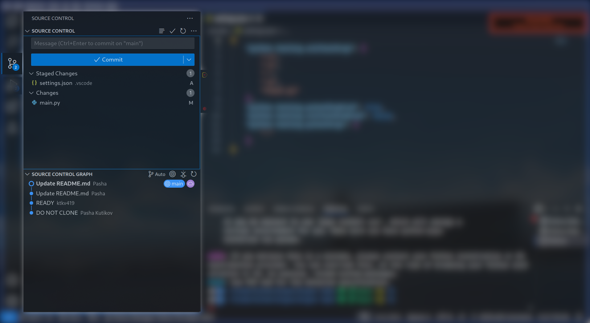
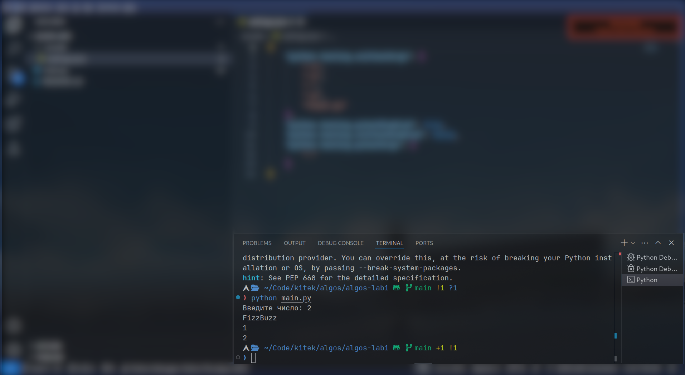
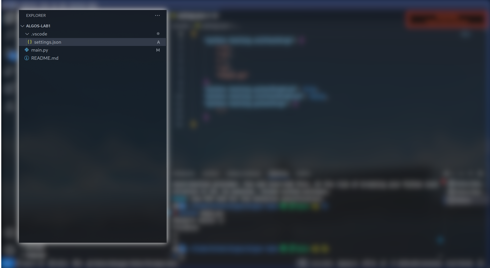

Интегрированная среда разработчика
IDE
Интегрированная среда разработки (IDE)
программное обеспечение, которое предоставляет разработчикам все необходимые инструменты для написания, тестирования и отладки кода

История развития IDE
1970
полноценные машины, которые обеспечивали лишь базовые функции редактирования текста и компиляции кода

Lisp Machine
История развития IDE
1980
Появление первых графических интерфейсов и интеграция редакторов кода с компиляторами

Borland C++.
История развития IDE
1990
Появление многофункциональных IDE, которые предлагали расширенные функции отладки и управления проектами

Microsoft Developer Studio
История развития IDE
2000
открытые IDE, которые поддерживают множество языков программирования и имеют богатое сообщество разработчиков

Eclipse
Преимущества IDE
Функциональность
Подсветка синтаксиса
разные элементы кода отображаются разными цветами
def filter_even_numbers(numbers):
even_numbers = []
for number in numbers:
if number % 2 == 0:
even_numbers.append(number)
return even_numbers
print(filter_even_numbers([1, 2, 3, 4, 5, 6]))
def filter_even_numbers(numbers):
even_numbers = []
for number in numbers:
if number % 2 == 0:
even_numbers.append(number)
return even_numbers
print(filter_even_numbers([1, 2, 3, 4, 5, 6]))
Преимущества IDE
Функциональность
Автозаполнение кода
функция, которая автоматически предлагает завершение написанных слов или фраз
Преимущества IDE
Функциональность
Интегрированные инструменты отладки
позволяют находить и исправлять ошибки в коде
Преимущества IDE
Упрощение процессов
Автоматизируют рутинные задачи
что по сути выполняет
python3 main.py
Общая структура IDE
Редактор кода
компонент, позволяющий писать и редактировать код
Общая структура IDE
Компилятор/интерпретатор
для преобразования написанного кода в исполняемый формат
Общая структура IDE
Отладчик
инструмент для выявления и исправления ошибок в коде
Общая структура IDE
Система управления версиями
возможность выполнять основные команды Git
Общая структура IDE
Встроенный терминал
панель, которая позволяет вам запускать командную строку или терминал прямо в Visual Studio Code
Общая структура IDE
Проводник
панель, которая отображает структуру вашего проекта
Примеры IDE
PyCharm
мощная интегрированная среда разработки для Python, созданная компанией JetBrains
Плюсы
- Интегрированные инструменты для отладки и тестирования
- Поддержка виртуальных окружений и управления зависимостями через pip
- Поддержка фреймворков
Минусы
- Требует больше системных ресурсов
- Сложный интерфейс?
- Платный для профессионального использования
PyCharm

Jupyter Notebook
приложение, позволяющее создавать и делиться документами, содержащими код, уравнения, визуализации и текстовые комментарии

IntelliJ IDEA
подходит для разработки на Java и других языках, поддерживаемых JetBrains (например, Kotlin, Scala)

Android Studio
инструмент для создания Android-приложений с использованием Java и Kotlin
Sublime Text
популярный текстовый редактор, который используется многими разработчиками благодаря своей легкости, быстродействию и широкому набору функций

IDE собери сам
текстовые редакторы с расширенными возможностями
Emacs

Vim

Visual Studio Code
поддерживает множество языков программирования, включая Python, и обладает широкой функциональностью благодаря расширениям
- Бесплатный и открытый
- Расширяемость
- Легкий и быстрый
- Поддержка IntelliSense
- Интеграция с Git
- Многофункциональный редактор
- Кроссплатформенность
- Потребление ресурсов
- Кривая обучения
- Проблемы с расширениями
- Зависимость от расширений
Критерии выбора IDE
Тип проекта
Разные проекты требуют различных инструментов
Python
PyCharm
Java
IntelliJ IDEA
iOS
XCode
Android
Android Studio
Всё и сразу
VSCode
Критерии выбора IDE
Системные требования
IDE могут быть ресурсоемкими и медленно работать на старых или менее мощных системах
Не ограничены в ресурсах
Любая IDE
Ограничены в ресурсах
- Sublime Text
- Atom
- Emacs
- Vim
- Notepad++
Фишки VSCode
IntelliSense
набор функций в интегрированных средах разработки (IDE) и текстовых редакторах, который улучшает процесс написания кода
- Автозаполнение
- Подсказки
- Подсветка ошибок
- Навигация по коду
Обертка для LSP, Lint и сниппетов
Фишки VSCode
Language Servers
программные компоненты, которые обеспечивают поддержку определенных языков программирования через протокол Language Server Protocol (LSP)
Фишки VSCode
Линтер
инструмент, который анализирует исходный код для выявления ошибок, потенциальных проблем, и несоответствий стандартам кодирования
Фишки VSCode
Сниппеты
предопределенные шаблоны кода, которые позволяют быстро вставлять часто используемые конструкции, функции и шаблоны в редактор
Фишки VSCode
Собственные сниппеты
"codeBlockPythonStretched": {
"prefix": "cbps",
"body": ["<pre class=\"r-stretch\"><code data-trim data-noescape data-line-numbers class=\"python\">", "$1", "</code></pre>"],
"description": "Creates stretched Python code block"
},
cbps
превращается в
<pre class="r-stretch"><code data-trim data-noescape data-line-numbers class="python">
</code></pre>
Фишки VSCode
Форматтеры
инструменты, которые автоматически форматируют исходный код в соответствии с заданными правилами оформления
Плагины VSCode
- Prettier - HTML, JS, TS, CSS, HTML, Markdown, YAML, TOML
- Black - Python
Фишки VSCode
Python плагины для VSCode
Python
Обеспечивает поддержку синтаксиса, отладки, автозаполнения и тестирования
Jupyter
инструменты для работы с интерактивными документами, которые содержат код, текст и визуализации
Pylance
предоставляет улучшенные функции IntelliSense для Python
Фишки VSCode
GitLens
добавляет информацию о коммитах, авторах и изменениях прямо в редактор

фишки vscode
settings sync
Позволяет синхронизировать настройки, расширения и темы между различными установками VSCode
фишки vscode
Live Share
позволяет совместно работать над проектом в реальном времени, что удобно для парного программирования и совместных обзоров кода

фишки vscode
Полезные сочетания клавиш
Ctrl+Shift+P - командная палитраCtrl+N - открыть новый файлCtrl+O - открыть существующий файлCtrl+S - сохранить файлCtrl+K+S - сохранить все файлыCtrl+W - закрыть текущий файлShift+Alt+F - форматировать документCtrl+L - выделить текущую строкуCtrl+P - поиск файла в рабочем пространстве